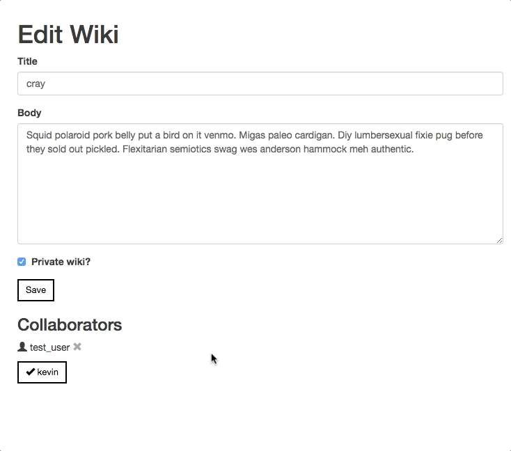

You know coding is for you when you can easily spend hours upon hours "in the zone" while forgetting to eat, forgetting to sleep, and generally forgetting that life exists outside of your code. When it came to this project, that was me. In fact, this project was scheduled to take 40 hours, which I was able to finish in 33.5 hours (yes, I time myself on everything — it's a leftover habit from freelancing), and I fit all 33.5 of those hours in one week. That's on top of my full-time job. Yes, I'll admit it, I was obsessed.
Much like the Bloc Chat project in the front-end portion of the curriculum, Blocipedia was the back-end portion's sink-or-swim project. Instead of walking you through the steps, explaining the purpose of chunks of code, or giving you an assignment with an explicit outcome based on a previous lesson, the project's instructions are essentially, "Here are some user stories. Here are some wireframes. Kbyeeeee!" Personally, I enjoy the freedom to build as I please using everything I've learned so far, and since Ruby on Rails is honestly such a pleasure to use, I believe the combination of creativity, experimentation and pure joy is what led to my one-week downfall in personal hygiene and nutrition.
Without further ado, let's dive in!
I was given a series of user stories and wireframes for this project. They are:
sign up page
signed-in user's wiki index
view an individual wiki
add/remove collaborators
Again, the wireframes were not set in stone. I did stick to them for the most part, but you'll see that I made some pretty significant changes in a few key areas for what I felt was a much more streamlined design and experience. For example, instead of having collaborators on their own page and putting them in a long list with checkmarks next to their names, I included collaborators on each wiki's edit page with the ability to simply click to add, click to remove, like a button that visually moves to indicate its status. It looks like this:
By the way, don't you just love the content you can seed to the database with the Faker gem? I used the hipster library, it cracks me up every time.
This project uses several gems that made development mostly a breeze. They are:
This project is what made me feel confident in my grasp of Ruby on Rails. Believe it or not, I didn't face any major challenges or get stumped for too long, and I believe that's because I came into the project with a master plan of how I wanted it to look and work, and then I allowed adjustments to that plan as I went through each user story.
The most difficult part of this project was setting up collaborators because it was my first time thinking about my database in a has many through context. Until this point, I had been using the belongs to, has many relationship for my database — a wiki belongs to a user, and a user has many wikis. Easy enough, right? But collaborators are users that already exist, and each wiki can have several collaborators. Because of this, I had to think less about collaborators (the users themselves on the wiki) and think more about collaborations (the actual connection between users and wikis).
So, following the Rails guide on active record associations, I created another table in my database called "collaborators" that holds nothing more than the foreign keys to users and wikis. No new object is created, but the relationships between objects (users and wikis specifically) are stored here. So, if a user gets added to a wiki as a collaborator, this table will create a row that holds the ID of the user and the ID of the wiki.
To make this work succesfully, the models for users, wikis and collaborators had to be set up with the aforementioned has many through associations. They look like this:
class Collaborator < ApplicationRecord
belongs_to :user
belongs_to :wiki
end
class User < ApplicationRecord
has_many :collaborators
has_many :wikis
has_many :collaborations, through: :collaborators, source: :wiki
end
class Wiki < ApplicationRecord
has_many :collaborators
has_many :users, through: :collaborators
belongs_to :user
end
Pretty cool how it works, right? Once I got it all set up and working, I was again amazed and humbled by the database. Learning how to work with databases and getting to know the ins and outs of their architecture has really brought programming full circle for me, which is what makes back-end programming so fascinating to me. Seeing the frontend and backend work together seamlessly is both satisfying in that small way of, "Hurray, I did it!" and in the big way of realizing what runs the technology around us and what the human brain is capable of inventing.
Blocipedia: GitHub / Live site
Date: August 2017
Project Checklist: Ruby, Rails, Bootstrap, HTML5, CSS3, Devise gem, Stripe gem
Built for Bloc.io